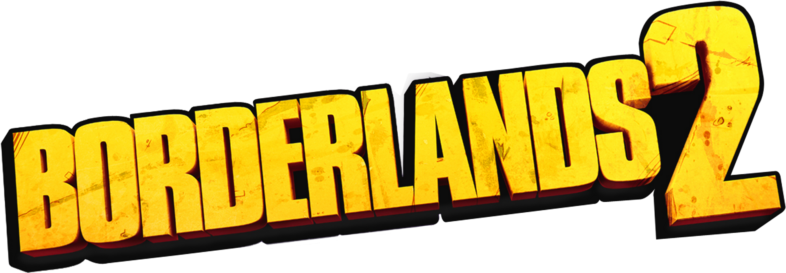

A Borderlands 2 az FPS és a szerepjátékok sajátos keveredése. Órákat tölthetünk a karakterek szintlépésével és a milliónyi fegyver megszerszésével. A Borderlands 2 új, procedurálisan generált fegyverek, pajzsok, gránátok, ereklyék, ellenségek és még sok más újdonsággal rendelkezik. Választani lehet a 4 új karakterosztály közül, hogy egy gondosan kidolgozott és összefüggő történeten keresztül minden új és meglepő környezetbe eljuthassunk a Pandora élő bolygóján.
A történet a Pandora-bolygón játszódik, ahová sok ember letelepedett, miután meghallották azt a pletykát, hogy rejtélyes idegen technológia hever ott valahol és csak arra vár, hogy a pénzsóvár szerencsevadászok megtalálják. De a kezdeti "aranyláz" gyorsan alábbhagyott, amint kiderült, a remélt kincseknek nyoma sincs és még a környezet is nagyon ellenséges. Ekkor a telepesek azon része, amelyiknek volt elég pénze, elhagyta a bolygót, míg a többiek ott ragadtak. A bolygón maradtaknak viszont hamarosan egy új veszéllyel is szembe kellett nézniük, miközben elkeseredve kutattak tovább a technológia után. Ez a helyi életformák felbukkanása volt, miután a tél tavaszra fordult, és azok felébredtek a hibernált állapotból
A helyszín ezúttal is az első részben megismert bolygó, és a játék nyitánya kísértetiesen emlékeztet a Borderlands kezdő képsoraira. Négy szerencsevadász (avagy Vault Hunter) érkezik Pandorára, hogy megtalálják azt a titokzatos kincset, amit már az első rész karakterei is hajkurásztak. A helyzet annyiban változik, hogy a minket szállító vonatot felrobbantja a Handsome Jack névre hallgató főgonosz, mi pedig rövid úton belekeveredünk a helyiek és a nekünk is odapörkölő rosszfiúk háborújába.
Dinamikus online co-op és LAN: Játszhatunk barátainkkal online és LAN-on keresztül. A Borderlands 2 zökkenőmentes rendszerrel rendelkezik, amely lehetővé teszi, hogy a kampányba be- és kiszálljunk anélkül, hogy újra kellene indítanod a játékot. Ráadásul az új felszereléseket bármelyik játékból bármelyik másikba átvihetjük! Akár 3, vagy 4 másik játékossal is játszhatunk, de a régi, 2 játékos osztott képernyős módra is lehetőségünk van.